Frisos verticais e logos extraídos do template oficial. Para usar como fundo herói: style="background:#1E5C80 url('assets/<arquivo>') right bottom/85% auto no-repeat" no <article class="slide mode-dark">. As variantes -up são espelhadas na vertical (friso subindo do rodapé); as originais descem do topo.
